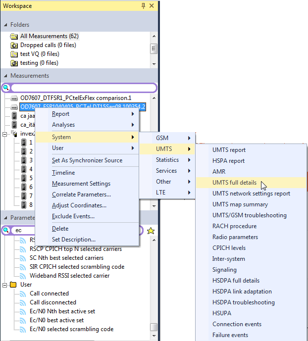
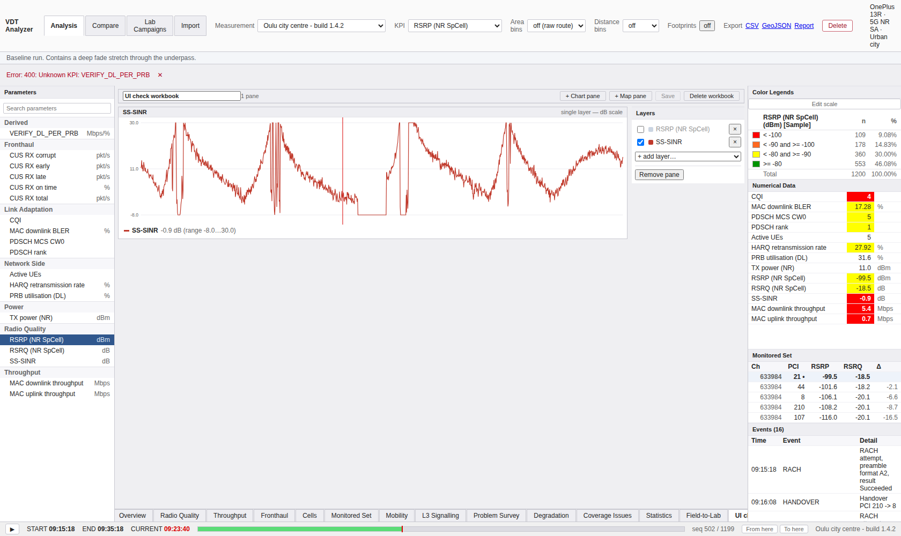
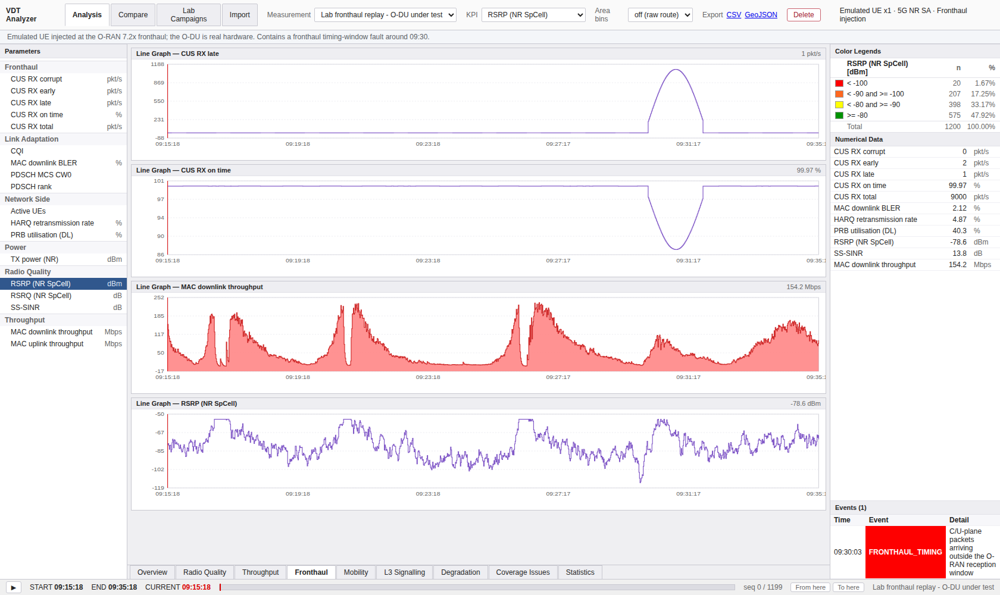
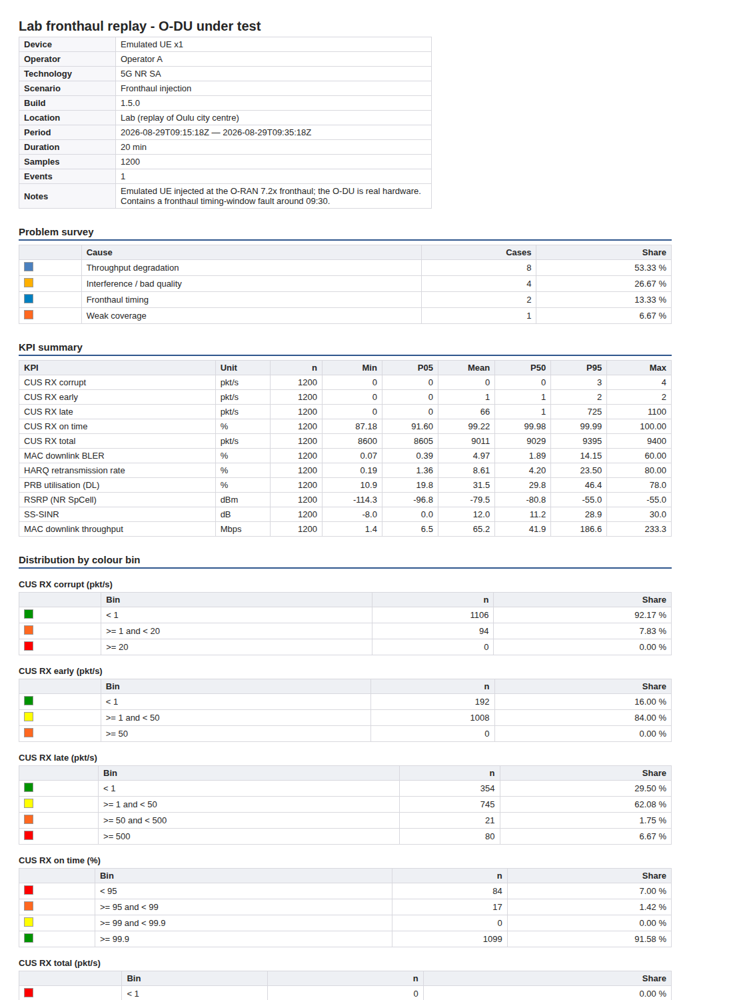

드라이브 테스트는 문서를 내놓기 위해 발주됩니다. 화면에서 문제를 찾는 것은 중간 과정이고, 최종 산출물은 리포트입니다. 레퍼런스는 이 경로를 워크북 → 페이지 → 데이터 뷰의 3층 구조 위에 얹었습니다.
"Viewing measurement data in Nemo Analyze is extremely flexible and user-configurable. The various views are organized into workbooks, pages, and data views. A workbook is the main component that contains all the different pages and data views."

| 층 | 담는 것 | 우리 |
|---|---|---|
| Workbook | 전체를 담는 그릇. 저장·복사·내보내기의 단위 | workbook |
| Page | 한 화면분. Add | Page로 추가, Remove | Page로 제거 | 없음 — 2층 구조 |
| Data view | Graph / Map / Grid 등 실제 뷰 | workbook_pane (CHART / MAP) |
| 경로 | 얻는 것 |
|---|---|
View | Workbook | 빈 워크북 |
View | Workbook Layout | 미리 정의된 배치 — 예: 2×2 그리드 |
측정 파일 우클릭 → Analyses | 이 측정에 쓸 수 있는 워크북 전체 목록 |
우클릭 → System | [폴더] | [워크북] | 기성 워크북 — 예: UMTS | UMTS full details |
워크북 실행 중에는 Executing Queries 다이얼로그가 뜨고
Cancel / Cancel All로 질의를 중단할 수 있습니다
p216.
| 옵션 | 하는 일 | 우리 |
|---|---|---|
| Auto centering | 현재 위치를 항상 지도 중앙에 | 없음 |
| Route names | 경로 이름 표시 | Layers 이름 |
| Current position | 현재 위치와 진행 방향 표시 | 위치만 |
| Highlight active route | Layers에서 선택한 경로를 강조 | 없음 |
| Optimized drawing | 경로 그리기 성능 향상 (드물게 왜곡되면 끄라고 안내) | 데시메이션 |
| Scale bar | 거리 축척 막대 | 있음 |
| Select map | 활성 지도 워크북의 지도 종류 변경 | 없음 |
V9에서 사용자가 조립하는 워크북을 만들었습니다. 구조는
workbook → workbook_pane(CHART 또는 MAP) →
workbook_layer입니다. Page 층이 없습니다 — 워크북 하나가 곧 한 화면입니다.
왜 이렇게 했는가: 우리 내장 탭들(Overview, Lab, Problem Survey)이 각각 목적을 가진 완성된 화면이고, 없던 것은 사용자가 자기 파라미터로 자기 화면을 만들어 보관하는 나머지 절반이었습니다. 그 절반에는 페이지 계층이 필요 없었습니다.
설계에서 신경 쓴 두 가지:
visible을 소속과 분리했습니다. 레이어를 끄는 것과
빼는 것은 다른 조작입니다. 껐다 켜는 동안 순서와 색이 유지돼야 합니다.
없는 것 중 실제로 아쉬운 것은 레이아웃 프리셋(2×2 등)과
기성 워크북 라이브러리입니다. 후자는 특히 값어치가 큽니다 —
UMTS full details처럼 "이 기술에서는 보통 이것들을 같이 본다"는 지식이
도구에 담겨 있는 것이니까요. 우리 내장 탭이 그 역할을 하지만
사용자가 그것을 복사해 고칠 수는 없습니다.


System | … 기성 워크북에 해당하지만 복사해 고칠 수
없습니다| 형식 | 상태 |
|---|---|
.srt Spreadsheet Report Template | 권장. Spreadsheet Report Designer로 제작 p235 |
.rpt Crystal Reports | legacy, 갱신 중단 |
.axt Analyze Excel Template | legacy, 갱신 중단 |
워크북 템플릿도 리포팅에 쓸 수 있지만 내보내기는 PDF만 가능합니다. 반면 워크북 자체는 PDF · MS Word · MS PowerPoint · 이미지로 내보낼 수 있습니다.
주목할 제약: 그들의 리포트 렌더링은 화면 해상도에 묶여 있습니다 — 최대 1920×1080, 배율 100%. 화면을 그려서 문서로 만드는 방식이기 때문입니다.
우리는 고정 레이아웃 HTML 리포트 한 종입니다
(/api/sessions/{id}/report.html). 템플릿 디자이너가 없고, 사용자가 리포트 구성을
바꿀 수 없습니다. 이것이 레퍼런스 대비 가장 큰 격차 중 하나입니다 —
그들에게는 리포트 제작이 별도 제품 수준의 기능입니다.
반대로 그들의 해상도 제약은 우리에게 없습니다. 우리 리포트는 HTML이라 브라우저에서 인쇄하면 PDF가 되고, 페이지 크기와 배율은 브라우저가 정합니다. "1920×1080, 배율 100%로 맞추라"는 안내를 사용자에게 할 필요가 없습니다.
그리고 리포트가 검증 대상입니다 — 검증 스크립트가 리포트를 실제로 받아 와 내용을 확인합니다. 화면을 캡처해 붙이는 방식이 아니라 데이터에서 직접 생성하기 때문에 가능한 일입니다.

"Triggering events enables report automation with server autoload, making running final measurement reports more convenient for the end-user. … please note that triggering events is not possible without a server connection."
*.nmf와 *.zip을 선택test)를 만들고 측정 파일을 넣음 →
자동 로드되어 클라이언트의 같은 이름 폴더에 나타남Tools | Event scheduler → 달력 → Triggering events →
AddSchedule Event Batch의 Triggering folder에 FTP와 같은 폴더 이름을 입력즉 "파일이 도착하면 리포트가 자동으로 만들어진다"는 파이프라인입니다. 정기 드라이브 테스트를 돌리는 조직의 실제 운영 형태이고, 측정 → 업로드 → 리포트가 사람 손 없이 이어집니다.
이벤트 스케줄러도, 자동 로드도 없습니다. 우리 임포트는 사람이 파일을 올리는 것으로 시작합니다.
다만 우리 구조가 이 시나리오에 더 가깝습니다. 레퍼런스는 데스크톱
클라이언트가 별도 서버 제품에 붙는 구조라 자동화하려면 서버 설정 6단계와 FTP
폴더 규약이 필요합니다. 우리는 처음부터 서버가 임포트하고 서버가 리포트를 생성합니다 —
report.html은 이미 HTTP 엔드포인트입니다.
그래서 "폴더를 감시해 임포트하고 리포트를 만든다"는 서버 쪽 작업 하나이지 제품 간 연동이 아닙니다. 지금 없는 것은 트리거뿐입니다.
| 항목 | 규모 | 왜 |
|---|---|---|
| 기성 워크북을 복사해 고치기 | 작음 | 내장 탭의 지식을 사용자가 출발점으로 쓸 수 있게. 워크북 저장은 이미 있음 |
| 워크북 레이아웃 프리셋 (2×2 등) | 작음 | 패널을 하나씩 쌓는 것보다 빠름 |
| 리포트 구성 선택 | 중간 | 템플릿 디자이너는 과하지만, 포함할 섹션을 고르는 것만으로도 큼 |
| 실행 중 질의 취소 | 작음 | ①의 Activity 항목과 같은 문제 |
| 임포트 트리거 → 리포트 자동 생성 | 중간 | UC25. 우리 구조가 오히려 유리 — 트리거만 없음 |
| 워크북을 PDF/이미지로 | 작음 | 지금은 리포트만 내보낼 수 있음 |